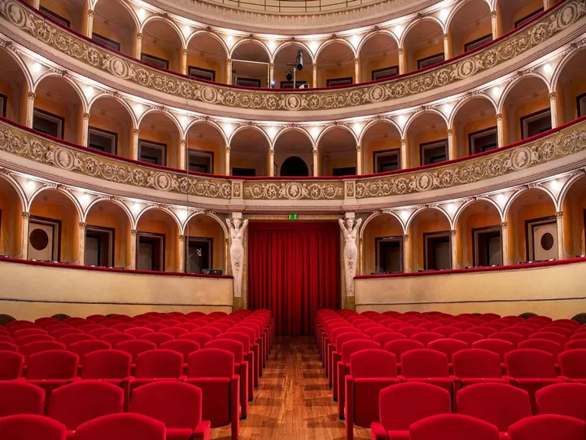

da ven 20 nov a ven 1 gen
Stagione Lirica di Padova
La Stagione Lirica di Padova 2026 entra nel vivo al Teatro Verdi con tre importanti appuntamenti, dopo il debutto dello scorso 29 luglio in Piazza Eremitani con la Cavalleria rusticana di Pietro Mascagni. La serata inaugurale estiva ha visto sul palco l'Orchestra di Padova e del…
 Indicazioni
Indicazioni
- Costi e prenotazioni
- Costo non indicato · Prenotazione non indicata
- Programma
- Programma da verificare. Apri la fonte ufficiale per orari e possibili aggiornamenti.
- In caso di maltempo
- Nessuna indicazione specifica pubblicata.
- Note
- Acquisito automaticamente dalla fonte.
L’EVENTO
Descrizione completa
La Stagione Lirica di Padova 2026 entra nel vivo al Teatro Verdi con tre importanti appuntamenti, dopo il debutto dello scorso 29 luglio in Piazza Eremitani con la Cavalleria rusticana di Pietro Mascagni. La serata inaugurale estiva ha visto sul palco l'Orchestra di Padova e del Veneto diretta da Marco Angius e il Coro Città di Piazzola sul Brenta guidato da Paolo Piana.
Il cartellone prevede ora i Pagliacci di Ruggero Leoncavallo il 20 e 22 novembre, seguito da La Traviata di Giuseppe Verdi il 28, 29 e 31 dicembre, per poi chiudersi l'1 gennaio con il tradizionale Concerto di Capodanno , evento tra i più attesi e sentiti in città, con un programma che comprenderà alcune tra le più amate Arie tratte dal repertorio di Offenbach, Puccini, Strauss e Verdi: musiche e Valzer tratti dal repertorio adatto al clima festoso.
Un percorso musicale che conferma l'impegno dell'Amministrazione nel promuovere la grande tradizione operistica e nel valorizzare l'offerta culturale della città, con titoli in coproduzione con il Teatro Sociale di Rovigo e con il Teatro Comunale di Treviso. Oltre a registi, voci e direttori di fama internazionale, anche quest'anno tutti gli appuntamenti della Stagione Lirica vedono la collaborazione dell'Orchestra di Padova e del Veneto.
IL PROGRAMMA
Programma e orari
Appuntamenti raccolti dalle fonti elencate. Dove manca un orario, non è ancora disponibile in questa scheda.
Programma pubblicato
- 2026-11-20 — 2026-11-20 · 20:45:00
- 2026-11-22 — 2026-11-22 · 16:00:00
- 2026-12-28 — 2026-12-28 · 20:45:00
- 2026-12-29 — 2026-12-29 · 20:45:00
- 2026-12-31 — 2026-12-31 · 21:00:00
- 2027-01-01 — 2027-01-01 · 17:00:00
- 2027-01-01 — 2027-01-01 · 21:00:00
INFORMAZIONI UTILI
Prima di partire
- Controllare la fonte prima di partire.
ORGANIZZAZIONE